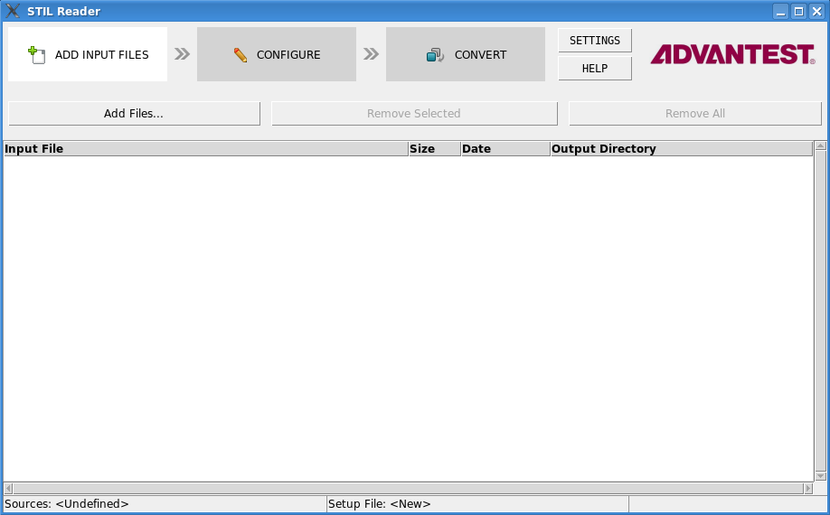

STIL Reader window reference
The STIL Reader window lets you control all aspects of the STIL Reader operation through a graphical user interface. In its three tabs, you select input files, configure conversion options, and monitor the conversion progress.
The window is opened by entering /opt/93000/stdl/bin/stilreader-gui in a terminal window.

Common elements
The four buttons along the top of the STIL Reader window are present in all tabs and let you switch between them:
- Add Input Files: Clicking this button switches to the input file selection tab.
- Configure: Clicking this button switches to the setup.
- Convert: Clicking this button switches to the file selection tab.
- Settings: Clicking this button lets you specify the PDF viewer that
STIL Reader uses to display the user guide.
If Use Default is checked, it uses the standard PDF viewer configured in the operating system. If this option is unchecked, you can click Browse to choose the preferred viewer.
- Help: Clicking this button displays the STIL Reader user guide.
Input file selection tab
The input file selection tab lets you specify which STIL files you want to convert.
The tab contains these elements:
- Add Files: Clicking this button displays a standard Open dialog in which you can choose one or more STIL files that you want to convert. All selected files are added to the file list.
- Remove Selected: Clicking this button removes all selected files from the file list. You can select multiple files in the list by shift-clicking or control-clicking them.
- Remove All: Clicking this button removes all files from the file list.
- File list: The list contains all STIL files that you want to convert. You can add or remove
files with the buttons described above.
The table contains these columns:
- Path: The location of the input file.
- Size: The file size.
- Date: The date when the file was last modified.
- Output: The directory where the converted output files will be saved.
This name is created based on the settings in the setup file and cannot be modified in this tab. See Configuration tab, below, for more information.
- shortcut menu: The shortcut menu contains one command:
- Change Output Directory. Choosing this command lets you specify the output directory for all selected input files in the file list.
Configuration tab
In the configuration tab, you can either choose an existing setup file or create a new setup file to use for the conversion. In both cases, you can optionally modify and save the setup file.
The tab contains these elements:
- New Setup File: Clicking this button creates a new setup file. The
file is displayed in the file area.
The content of the file as the same as the one generated with the -template command line switch.
- Load Setup File: Clicking this button displays an Open dialog in which you can select the setup file to use for the conversion. The chosen file is displayed in the file area.
- Save Setup: Clicking this button saves any changes you have made in
the file area back to disk. If the file has not been saved before, you are prompted for a name
and location.
You must save your changes to have them affect the conversion.
- Save Setup As: Clicking this button saves the content of the file area as a new file under the name and in the location you specify.
- Search Setup File: STIL Reader searches the setup file for any text in this field when you click the Find button.
- File area: The main part of the tab is the file area, where the current setup file is displayed. The field provides standard text editing functions. The setup file displayed or edited in this ara is in all respects a normal STIL Reader setup file.
Conversion tab
In the conversion tab, you can start, stop, and monitor the conversion process.
The tab contains these elements:
- Run: Clicking this button starts the conversion of all files in the
table area with the settings specified in the configuration file.
The progress of the conversion is displayed in the progress bar to the left of the button as well as in the conversion log at the bottom of the window.
- Stop: Clicking this button immediately stops the conversion process. Any files that are already converted are kept, but incompletely converted files are not finished.
- File list: The file list contains the files to be converted; these are the files that have
been selected in the input file selection tab described above.
The columns in this tab are the same as in the file selection tab, with the addition of the Status column. A file can have these statuses:
- N/A: The conversion of this file has not yet begun.
- Working: This file is now being converted.
- Passed: The file has successfully been converted.
- Failed: STIL Reader tried to convert the file but could not do so because of an error. The error is included in the conversion log.
- Conversion log: The lowest part of the window displays the conversion log.
- Status bar: The status bar at the bottom of the window displays information about the source and setup files.
Functional changes
- Introduced in SmarTest 7.2.3